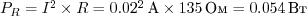

Светодиод
Светодиод (англ. Light Emitting Diode или просто LED) — энергоэффективная, надёжная, долговечная «лампочка»
Светодиод — вид диода, который светится, когда через него проходит ток от анода (+) к катоду (−).
Основные характеристики
| Падение напряжения | VF | Вольт |
| Номинальный ток | I | Ампер |
| Интенсивность (яркость) | IV | Кандела |
| Длина волны (цвет) | λ | Нанометр |
Восприятие световых волн человеком

Типовая схема включения

Собственное сопротивление светодиода после насыщения очень мало, и без резистора, ограничивающего ток через светодиод, он перегорит
Порядок: «резистор до» или «резистор после» — не важен
Поиск подходящего резистора
Рассчитаем какой резистор R в приведённой схеме нам нужно взять, чтобы получить оптимальный результат. Предположим, что у нас такой светодиод и источник питания:
Найдём оптимальное сопротивление R и минимально допустимую мощность резистора PR.
Сначала поймём какое напряжение должен взять на себя резистор:
По закону Ома найдём значение сопротивления, которое обеспечит такое падение:
Таким образом:
- при сопротивлении более 135 Ом яркость будет ниже заявленной
- при сопротивлении менее 135 Ом срок жизни светодиода будет меньше
Теперь найдём мощность, которую при этом резистору придётся рассеивать:

Это означает, что при мощности резистора менее 54 мВт резистор перегорит.
Простое правило
Чтобы не заниматься расчётами резистора каждый раз во время проведения экспериментов, можно просто запомнить правило для самого типичного сценария.
Для питания 1 светодиода на 20 мА от 5 В используйте резистор от 150 до 360 Ом.